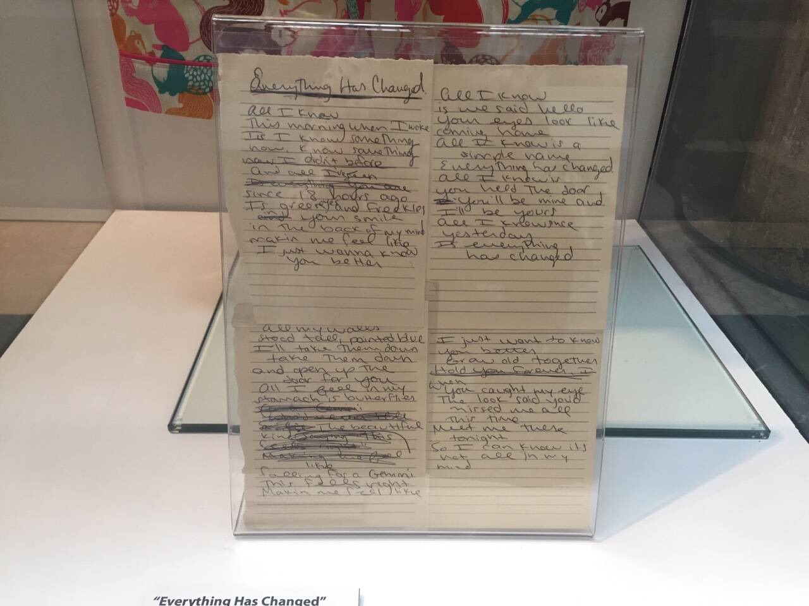
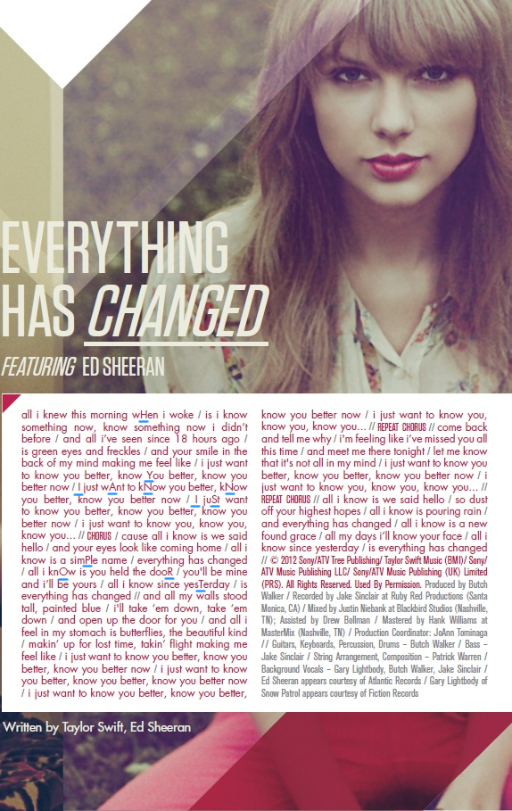
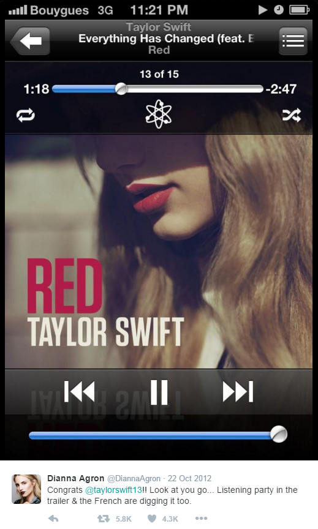

1. < Everything Has Changed >
Everything Has Changed的隐藏信息：HYIANNIS PORT
Everything Has Changed描述的内容：
在RED track by track（9分56秒开始）中说: "It's about this moment, that both people are having when they see each other, and all of the sudden the world looks different."
在接受IBTimes采访时说: "It's about falling in love, It's about meeting someone and all of a sudden your entire perspective on the world changes - you're thinking for two, instead of one."
是TS遇到一个让她心动的人，是关于fall in love
Everything Has Changed的完成时间：
2012年5月15号写，5月28号录，参考Chapter 1.2.2 – Everyone Was Watching
既然EHC隐藏信息是Hyannis Port，那这首歌写的就是5月份至少认识TS，又和TS一起去过Hyannis Port的人。
在2016年，Taylor Swift的展览中展出了EHC的手写歌词
{kind=link}
有部分歌词与正式版不同
原始版：
all my walls stood tall, painted blue
I'll take them down, take them down
and open up the door for you
all I feel in my stomach is butterflies, falling for a Gemini
this feels right, making me feel like
I just want to know you better
正式版：
all my walls stood tall, painted blue
I'll take them down, take them down
and open up the door for you
all I feel in my stomach is butterflies, the beautiful kind
making up for lost time, taking flight, making me feel like
I just want to know you better
两版中虽措辞略有不同，表达的都是坠入爱河时的心情。
关键是原始版中有一句：falling for a Gemini
Gemini的意思是双子座，但查完TS身边所有可疑人员，没有一个是双子座。
有人怀疑EHC是和ED合写的，会不会这个Gemini是ED的恋人，我觉得不是的， TS先写了手稿中的词，然后再与ED一起对原始歌词做了调整，比如ED坚持把"I just want to know you better"重复个好多遍。
初始的词"Gemini"是TS自己写的，隐藏信息"HYIANNIS PORT"也是TS自己想的，这些都和ED以及他的恋情无关。
鉴于TS身边没有双子座的疑似恋人，我倾向于这么理解：
Gemini是拉丁语中twins的意思，可能这里指的就是对TS来说相当于twins、mirror、soulmate的人。
再结合前面提到的写作时间和隐藏信息，这个人是12年5月EHC录制完成时与TS fall in love，并且在Hyannis Port留下共同回忆的人。
候选人：Dianna、Ashley、Claire、Ethel奶奶、Rory阿姨（Ethel的女儿）
可能有人会问，为什么候选人全是女人？
因为TS身边没有一个男人同时满足以下两个条件：
1. 在TS写完EHC之前或之时与TS fall in love
2. 和TS一起去过Hyannis Port
这首歌写谁，有人猜是HS，有人猜是Conor，还有人猜是ED……
猜HS的是因为TS和HS在2012年4月曾“在一起”过，但事实上他们4月的绯闻是假的，Gossip Cop辟过谣，Haylor真正的时间是12年底。
猜Conor的是因为Hyannis Port与肯尼迪家族有关，但TS在写完录完EHC时并不认识Conor。
猜ED的是因为他是这首歌的合作者，TS和他关系很好，但他与Hyannis Port无关。
所以以上这3位都不是。
TS很早前就看过肯尼迪家族的传记，很钦佩Ethel Kennedy，在2011年为Ethel写了一首Starlight，2012年1月19号在Artist at the table dinner and discussion活动中与Ethel的小女儿Rory Kennedy合影，1月20号在圣丹斯电影节出席纪录片< Ethel >的首映，与Ethel及家人合影。国庆节是她们邀请TS及其朋友去Hyannis Port和肯尼迪家族一起度假。
{kind=link}
不过这首about fall in love的EHC显然和她俩无关。
那剩下只有F4中的这3位了。
TS从不避讳和Ashley或Claire在一起逛街、吃饭、去对方家玩，在INS上艾特对方，还常带她们去颁奖礼，2012和2013年，在任何场合TS身边都能看到她俩。
但TS把DA藏起来了。在2012-2013年，TS和DA从不一起参加颁奖礼，从不一起逛街，吃饭旁边一定有Ashley和Claire，唯一一次被拍到两人单独在一起还是2012年3月25号一起看电影，之后再也没有两人单独的公开的合影。论和TS在一起被拍到的次数，DA还不及Ashley或Claire的零头。
可是媒体和同行心知肚明，只提TS和DA。
EHC里有一句
Is green eyes and freckles and your smile in the back of my mind
Ashley和Claire都是棕色眼睛
DA是绿色，眼睛颜色的讨论具体请看这个帖子第292、293楼
另外注意，EHC的隐藏信息其实不是HYANNIS PORT，而是HYIANNIS PORT
看歌词本里的大写字母
TS在正确的地名Hyannis Port中多加了一个字母i
也许是因为她记错了地名，不过她8月去了那么多次这地方，还在这里买了房子，如果这样都能记错就有点……就算她真记错了，她的工作人员发现也会帮她纠正，总不能都记错吧
也许是因为
Hyiannis Port
Dianna
2012年10月22号，RED发行后，还在法国拍电影的DA发推支持，配的图就是EHC的播放界面，1:18的位置是：
You'll be mine and I'll be yours
All I know since yesterday is everything has changed
如果这首歌与她无关，于情于理，她最该放的是RED中TS“唯一”一首写给她的< 22 >